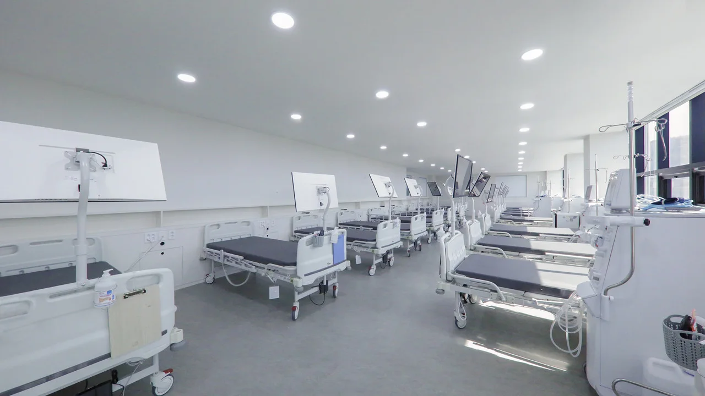

01 · LOCATION
면목동 신장투석 진료를 찾는 분께
면목연세석내과는 서울특별시 중랑구 면목로 398, 스마트빌딩에 있습니다. 면목역 7호선 2번 출구 인근이며, 면목본동 주민센터 맞은편입니다.
공식 홈페이지에서 신장질환·만성신부전 진료와 인공신장실을 안내하고 있습니다. 자세한 시설 정보는 면목연세석내과 인공신장실 소개에서 확인할 수 있습니다.

02 · FIND YOUR ROUTE
출발 지역에 맞춰 방문 경로를 확인하세요
안내하는 진료 장소는 중랑구 면목로 398 스마트빌딩 한 곳입니다. 상봉동·망우동·용마산은 방문하시는 분의 출발 지역입니다. 아래에서 해당 지역을 확인한 뒤 지도에 정확한 출발지를 지정하세요.
면목동 신장투석 방문 안내
면목동 내에서도 출발 위치에 따라 가까운 길이 달라집니다. 목적지는 면목역 인근 면목로 398로 지정하세요. 면목본동 주민센터 맞은편 스마트빌딩이며 외래는 2층, 인공신장실은 5·6층입니다.
건물 위치·층별 안내 →상봉동 신장투석 방문 안내
상봉역에서 출발하는 경우와 상봉동의 자택·직장에서 출발하는 경우를 구분해 경로를 확인하세요. 목적지를 면목연세석내과로 선택하고, 도착 후 바로 투석실로 가는지 외래 상담이 먼저인지 전화로 확인하면 좋습니다.
처음 상담할 때 확인할 내용 →망우동 신장투석 방문 안내
망우역을 이용하시는 분은 역을, 집에서 이동하시는 분은 실제 주소를 출발지로 입력하세요. 보호자 차량으로 이동한다면 주차 이용 방법과 승하차 위치를 함께 문의하세요. 기존 병원에서 옮기는 경우에는 진료 기록과 일정을 먼저 조율합니다.
병원을 옮기기 전 상담 순서 →용마산 신장투석 방문 안내
용마산역 주변에서 찾으신다면 지도 출발지를 ‘용마산역’ 또는 실제 주소로 설정하세요. 병원은 면목역 인근에 있으므로 용마산역과 면목역을 구분해 목적지를 확인하세요. 보행이나 계단 이용이 어려우면 이동·동행 조건도 함께 문의하세요.
보호자 동행·이동 준비 →이동 시간과 최적 경로는 지도에서 확인하세요. 주차·차량 지원·야간 투석 제공 여부는 이 안내에서 확정하지 않습니다.
네이버 지도에서 출발지 지정하기 ↗03 · BEFORE YOUR VISIT
첫 투석 상담·전원 전에 확인할 세 가지
- 진료·투석 일정
첫 상담이 가능한 날짜와 시간을 확인하세요. 홈페이지의 외래 진료시간이 투석 일정과 같다고 가정하지 말고 별도로 문의해 주세요.
- 방문 시 필요한 자료
기존에 진료나 투석을 받고 있다면, 어떤 진료 기록이나 검사 결과가 필요한지 병원에 확인해 방문을 준비하세요.
- 이용 조건과 비용
접수 마감, 검사 가능 항목, 비용, 주차 및 이동 관련 안내는 현재 이용 조건에 맞게 전화로 확인해 주세요.
04 · CHECK BEFORE YOU DECIDE
중랑구 신장투석 병원을 알아볼 때 확인할 내용
가까운 위치와 함께 의료진, 실제 치료 일정, 자료 전달 방법을 확인하세요. 질병관리청의 혈액투석 안내도 담당 전문의와 투석병원 평가 정보를 살펴보도록 안내합니다. 아래는 비교를 돕는 질문이며 이 병원의 평가등급이나 인증을 표시한 것은 아닙니다.
- 의료진과 진료 분야
- 담당 의료진과 신장질환·혈액투석 진료 범위를 확인하세요. 공식 의료진 소개에서 공개 약력을 볼 수 있습니다.
- 일정과 치료의 연속성
- 상담 가능일, 실제 투석 시작일, 기존 병원과의 일정 조율을 확인하세요. 외래 운영시간만으로 투석 시간을 판단하지 마세요.
- 시설과 방문 조건
- 공식 인공신장실 안내와 실제 사진을 살펴보고, 동행·이동에 필요한 조건을 문의하세요.
- 진료 기록과 문의 창구
- 병원이 요청하는 서류와 전달 방법을 확인하세요. 개인 진료 기록은 공개 댓글이나 게시판에 올리지 말고 병원이 안내한 방식으로 전달하세요.
일반 건강정보 참고: 질병관리청 국가건강정보포털 — 혈액투석
05 · QUESTIONS
신장투석 안내에서 자주 찾는 내용
신장투석과 혈액투석 중 어떤 진료를 안내하나요?
이 페이지는 면목연세석내과 공식 홈페이지에서 소개하는 혈액투석과 인공신장실을 안내합니다. 개인에게 필요한 치료 방법과 진료 가능 여부는 의료진에게 문의해 주세요.
상봉동·망우동·용마산에도 지점이 있나요?
이 페이지에서 안내하는 병원은 면목동, 면목로 398 스마트빌딩에 있는 면목연세석내과 한 곳입니다. 상봉동·망우동·용마산은 출발 지역이며, 해당 지역의 별도 지점을 안내하는 것은 아닙니다.
이 사이트에서 투석 예약을 확정할 수 있나요?
이 페이지는 병원 정보와 공식 홈페이지를 연결하는 안내 페이지입니다. 상담·예약 가능 여부와 투석 일정은 병원으로 직접 전화해 확인해 주세요.
다른 병원에서 혈액투석을 받다가 옮길 수 있나요?
진료 가능 여부와 필요한 기록을 먼저 확인해야 합니다. 기존 담당 의료진과 새 병원의 안내에 따라 일정과 자료 전달을 조율하세요. 전원 상담 준비 순서를 확인할 수 있습니다.
용마산역에서 얼마나 걸리나요?
출발 위치, 이동 수단, 교통 상황에 따라 달라 고정 시간을 표시하지 않습니다. 네이버 지도에서 출발지를 용마산역 또는 실제 주소로 입력하고 면목로 398까지의 경로를 확인하세요.
일반 내과 외래를 알아보신다면 면목동 내과 진료·외래시간 안내를 함께 확인하세요.
병원을 더 자세히 알아보세요.
정보 출처: 공식 신장질환 안내 · 공식 인공신장실 안내
본 문서는 방문 준비를 돕는 병원 정보 안내이며, 개인별 진단이나 치료 지침을 제공하지 않습니다.